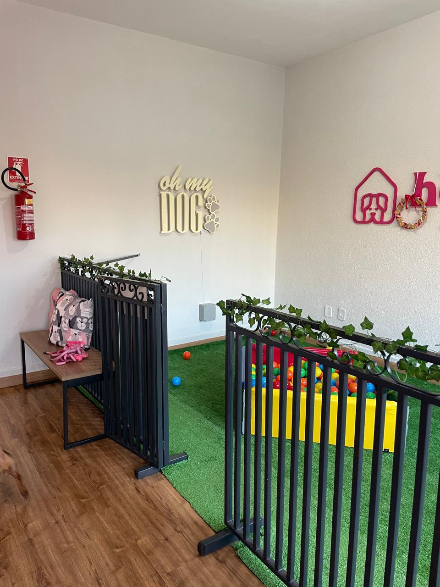
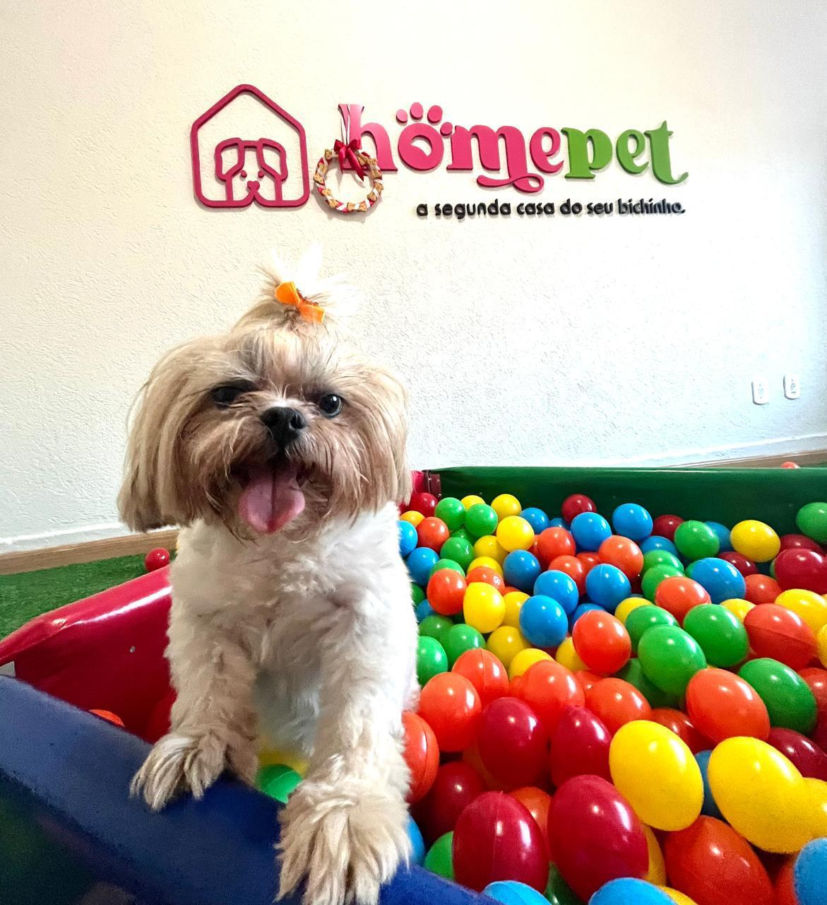
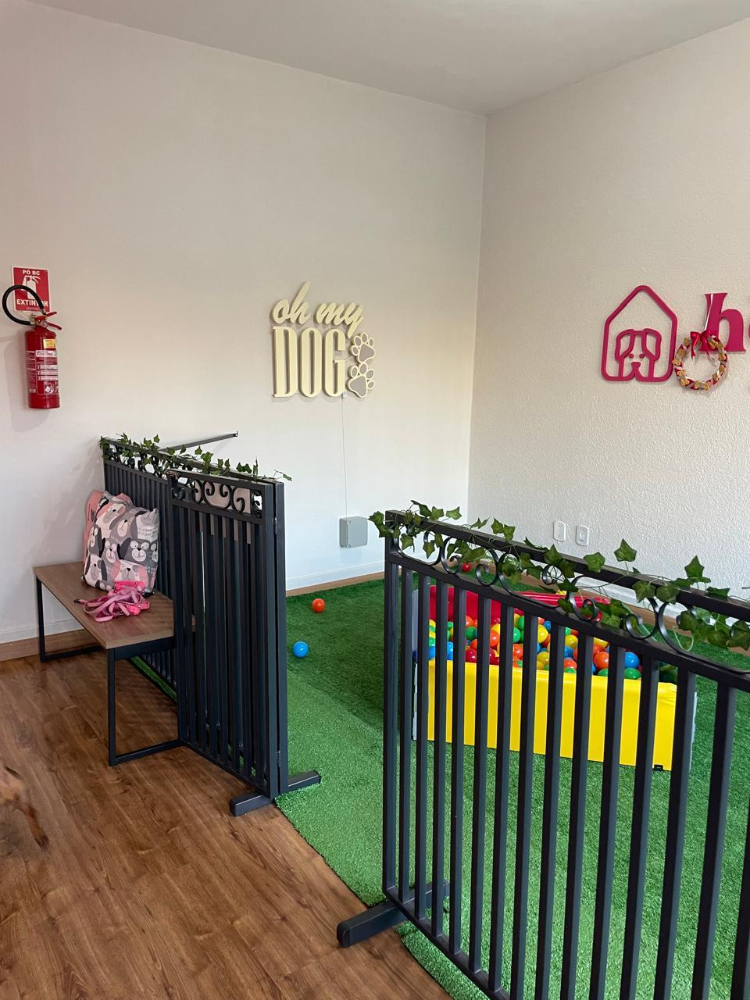
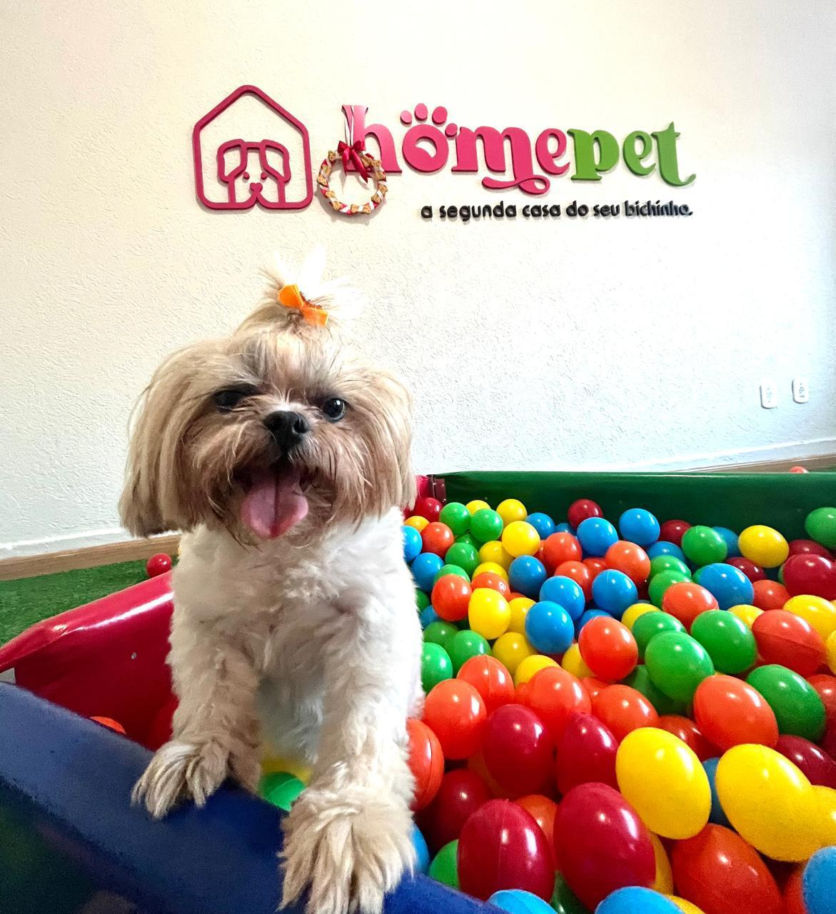
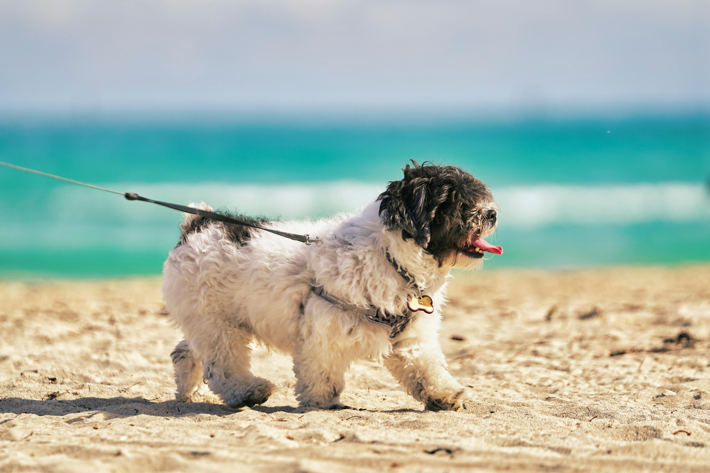

NOSSA HISTORIA
Há alguns anos, como veterinária apaixonada pelos animais, comecei a perceber uma necessidade crescente entre os tutores de cães: a busca por um local seguro, confortável e confiável onde seus bichinhos pudessem ficar quando precisavam se ausentar. Muitos desses tutores preferiam deixar seus cães comigo, justamente pela confiança que tinham no meu trabalho e no fato de ser uma profissional da saúde animal. Assim, surgiu a ideia do meu Hotel de Cães. No início, comecei hospedando os peludinhos na minha própria casa. Com o tempo, percebi que, apesar de ser uma solução prática, essa configuração já não atendia mais a demanda. Eu queria oferecer aos animais mais conforto, segurança e um ambiente adequado para que se sentissem em casa, mesmo quando estivessem longe de seus tutores. Foi quando decidi abrir um local exclusivo para isso: um verdadeiro hotel pensado nos cães, com toda a infraestrutura necessária para que eles se sentissem acolhidos e bem cuidados.
CONHEÇA NOSSAS
PROFISSIONAIS
Natalia
Bem-vindo(a) à nossa clínica veterinária, onde a saúde e o bem-estar dos seus animais de estimação são a nossa prioridade. Oferecemos um ambiente acolhedor e profissional, com uma equipe apaixonada por cuidar de pets como se fossem parte da nossa própria família. Nossos serviços abrangem desde consultas preventivas e vacinação até exames especializados, cirurgias e acompanhamento nutricional. Contamos com equipamentos modernos e uma abordagem humanizada para garantir o melhor atendimento ao seu companheiro. 🐾.
Vitoria
Bem-vindo(a) à nossa clínica veterinária, onde a saúde e o bem-estar dos seus animais de estimação são a nossa prioridade. Oferecemos um ambiente acolhedor e profissional, com uma equipe apaixonada por cuidar de pets como se fossem parte da nossa própria família. Nossos serviços abrangem desde consultas preventivas e vacinação até exames especializados, cirurgias e acompanhamento nutricional. Contamos com equipamentos modernos e uma abordagem humanizada para garantir o melhor atendimento ao seu companheiro. 🐾.
CONHEÇA NOSSO LOCAL
 



AMBIENTE DE CONFORTO
E DIVERSÃO
Cachorros têm necessidades únicas que vão além de alimentação e abrigo. Eles precisam de espaços para brincar, explorar e descansar. Um ambiente bem estruturado deve oferecer áreas amplas para atividades físicas, brinquedos interativos para estimular a mente e locais tranquilos onde possam relaxar. Esses elementos ajudam a prevenir o tédio, que pode levar a comportamentos destrutivos, e garantem que o animal expresse seus comportamentos naturais, como correr, cavar e explorar. Além disso, ambientes adaptados promovem a socialização saudável, tanto entre os cães quanto entre eles e os humanos. Locais projetados com áreas para interação permitem que os cachorros desenvolvam habilidades sociais, tornando-os mais equilibrados e confiantes. Para complementar, o conforto térmico também é essencial. Áreas cobertas, ventilação adequada e proteção contra condições climáticas extremas garantem que os cães estejam confortáveis em qualquer estação do ano.
NOSSOS SERVIÇOS
.png)
CRECHE
Nossa creche proporciona um espaço seguro para animais de pequeno porte, com uma rotina de atividades diárias (físicas, cognitivas, sensoriais e sociais) para estimular os doguinhos, fazendo com quem supram suas necessidades naturais da espécie, para que possam voltar para casa tranquilos. Nosso serviço de creche é realizado através de planos mensais, variando conforme a frequência (1,2,3,4 ou 5x na semana) e a duração dentro do dia (integral ou meio período) escolhidos de acordo com a necessidade do tutor e do cachorrinho!
HOSPEDAGEM
As comodidades do nosso hotel são projetadas para atender às necessidades individuais de cada animal. Contamos com espaços seguros para que ele possa brincar, relaxar e socializar com outros amigos, sempre sob supervisão e com total segurança...
TRANSPORTE
Oferecemos um serviço de transporte especializado para garantir que seu cão chegue até o nosso hotel de forma segura e confortável...
PET SITTER
Oferecemos um serviço de pet sitter exclusivo para quem prefere que seu cão seja cuidado no conforto de sua própria casa enquanto você está viajando...
COMO COMEÇAR
REQUISITOS
Para começar na HomePet, o primeiro passo é garantir o bem estar e saúde do seu doguinho, pedimos que esteja com a vacinação em dia (Polivalente V8 ou V10 e Antirrábica) prevenção de pulgas e carrapatos em dia. Machos acima de 7 meses apenas castrados e fêmeas fora do período fértil (cio).

AVALIAÇÃO
Após atender a todos os requisitos e passar pela avaliação com sucesso, o cãozinho inicia o processo de adaptação, com foco na familiarização com novos ambientes e socialização gradual com outros cães. Esse processo é feito com calma, garantindo o melhor para o bem-estar.
ADAPTAÇÃO
Oferecemos uma avaliação comportamental gratuita para o seu doguinho! Ele ficará conosco por meio período, permitindo que seu comportamento seja observado de forma cuidadosa e profissional.

RESTRIÇÕES
Cães de grande porte
Não vacinados
Doentes.